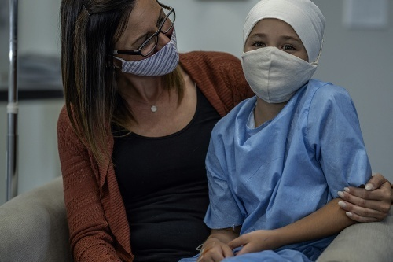

To speak or act on behalf of another person or group of people.
代表另一个人或群体发声、申诉或采取行动，捍卫受助者的合法权益与人格尊严。
Caring
/ˈkɛərɪŋ/
关爱 / 仁爱之心p. 16
Concern for clients' and their families' dignity, independence, preferences, privacy, and safety at all times. True caring requires honesty, sensitivity, comforting, discretion, and respect while showing this concern.
A general term for any person receiving care or support services in a community setting: hospital patients, facility residents, and clients in the community.
Care that demonstrates concern for the dignity, independence, individualized care, preferences, privacy, and safety (DIPPS) of clients and their families at all times. Also known as compassionate care or person-centred care.
A health care provider licensed and regulated by the province or territory to carry out nursing techniques and provide client care. Known as a registered practical nurse (RPN) in Ontario.
A facility that provides living accommodations and services; includes assisted-living facilities, long-term care facilities, group homes, and retirement residences.
同时提供生活居所与照护服务的实体机构；涵盖辅助生活机构、长期照护院舍、集体之家以及养老度假寓所等。
Patient
/ˈpeɪʃənt/
患者 / 病人p. 9
A person receiving care in a hospital setting. Also known as a client.
在医院急症或住院环境中接受医疗诊断与救治的人员。在人本关怀体系中亦统称为案主（Client）。
Primary Care Nurse
/ˈpraɪˌmɛri kɛər nɜːrs/
责任制初级责任护士p. 13
A primary care nurse is responsible for the ongoing management of the health of a client. Duties include liaising with other health care team members, the client, and her or his family.
An approach to work that demonstrates respect for others, commitment, competence, and appropriate behaviour.
一种展现对他人尊重、敬业承诺、胜任能力以及得体职业举止的工作方式与态度基石。
Reflective Practice Review
/rɪˈflɛktɪv ˈpræktɪs rɪˈvjuː/
反思性执业自我审查p. 13
A review and self-evaluation of care provided with the goal of identifying ways to improve clinical performance and caregiving.
对自身所提供照护过程的回顾与批判性自我评估，旨在识别不足并持续改进临床执业胜任力与服务品质。
Registered Nurse (RN)
/ˈrɛdʒɪstərd nɜːrs/
注册护士（RN）p. 13
A health care provider who is licensed and regulated by the province or territory to maintain overall responsibility for the planning and provision of client care.
See licensed practical nurse (LPN). The statutory professional title used exclusively in the province of Ontario.
参见持牌实用护士（LPN）。安大略省专用的法定实用护士专业头衔。
Registered Psychiatric Nurse (RPN)
/ˌsaɪkiˈætrɪk nɜːrs/
注册精神科护士（RPN）p. 12
A nurse who is educated and registered in his or her own province to provide care specifically to individuals whose primary needs relate to mental, emotional, and developmental health.
A person living in a live-in facility (often called a long-term care facility).
在寄宿式院舍照护机构（常称长期照护院舍）中长期居住并接受照护的受助长者或人士。
Scope of Practice
/skoʊp əv ˈpræktɪs/
法定执业范围p. 12
The limit and extent of a health care worker's role as determined by your province's educational standards and your employer's policies in order to protect clients from harm. Scope of practice varies from province to province and employer to employer.
See social support. Assisting individuals in returning to and thriving in mainstream society.
参见“社会支持”。协助案主重返并良好适应主流社区与社会生活的赋能过程。
Social Support
/ˈsoʊʃəl səˈpɔːrt/
社会支持p. 3
Equipping a person with the skills and knowledge necessary to successfully live independently outside an institution. Also known as social reintegration.
为案主提供在机构之外成功实现社区独立生活所必需的生活技能与知识储备。亦称社会重新融入。
Support Worker
/səˈpɔːrt ˈwɜːrkər/
支持工作者（PSW / HCA 等）p. 3
A health care worker who provides services to people, both in facilities and in the community, who need help with their daily activities.
在医疗照护机构及社区家庭中，为日常生活活动需要协助的案主提供基础照护与生活支持服务的专业照护人员。
Unregulated Care Providers (UCPs)
/ʌnˈrɛɡjʊleɪtɪd kɛər prəˈvaɪdərz/
未受立法监管的照护者（UCPs）p. 10
A broad term applied to staff members who assist nurses and other health care providers in giving care. Support workers are currently UCPs in most Canadian jurisdictions.
To speak or act on behalf of another person or group of people.
代表另一个人或群体发声、申诉或采取行动，捍卫受助者的合法权益与人格尊严。
Caringp. 16
/ˈkɛərɪŋ/
关爱 / 仁爱之心
Concern for clients' and their families' dignity, independence, preferences, privacy, and safety at all times. True caring requires honesty, sensitivity, comforting, discretion, and respect while showing this concern.
A general term for any person receiving care or support services in a community setting: hospital patients, facility residents, and clients in the community.
Care that demonstrates concern for the dignity, independence, individualized care, preferences, privacy, and safety (DIPPS) of clients and their families at all times. Also known as compassionate care or person-centred care.
A health care provider licensed and regulated by the province or territory to carry out nursing techniques and provide client care. Known as a registered practical nurse (RPN) in Ontario.
A facility that provides living accommodations and services; includes assisted-living facilities, long-term care facilities, group homes, and retirement residences.
同时提供生活居所与照护服务的实体机构；涵盖辅助生活机构、长期照护院舍、集体之家以及养老度假寓所等。
Patientp. 9
/ˈpeɪʃənt/
患者 / 病人
A person receiving care in a hospital setting. Also known as a client.
在医院急症或住院环境中接受医疗诊断与救治的人员。在人本关怀体系中亦统称为案主（Client）。
Primary Care Nursep. 13
/ˈpraɪˌmɛri kɛər nɜːrs/
责任制初级责任护士
A primary care nurse is responsible for the ongoing management of the health of a client. Duties include liaising with other health care team members, the client, and her or his family.
An approach to work that demonstrates respect for others, commitment, competence, and appropriate behaviour.
一种展现对他人尊重、敬业承诺、胜任能力以及得体职业举止的工作方式与态度基石。
Reflective Practice Reviewp. 13
/rɪˈflɛktɪv ˈpræktɪs rɪˈvjuː/
反思性执业自我审查
A review and self-evaluation of care provided with the goal of identifying ways to improve clinical performance and caregiving.
对自身所提供照护过程的回顾与批判性自我评估，旨在识别不足并持续改进临床执业胜任力与服务品质。
Registered Nurse (RN)p. 13
/ˈrɛdʒɪstərd nɜːrs/
注册护士（RN）
A health care provider who is licensed and regulated by the province or territory to maintain overall responsibility for the planning and provision of client care.
See licensed practical nurse (LPN). The statutory professional title used exclusively in the province of Ontario.
参见持牌实用护士（LPN）。安大略省专用的法定实用护士专业头衔。
Registered Psychiatric Nurse (RPN)p. 12
/ˌsaɪkiˈætrɪk nɜːrs/
注册精神科护士（RPN）
A nurse who is educated and registered in his or her own province to provide care specifically to individuals whose primary needs relate to mental, emotional, and developmental health.
A person living in a live-in facility (often called a long-term care facility).
在寄宿式院舍照护机构（常称长期照护院舍）中长期居住并接受照护的受助长者或人士。
Scope of Practicep. 12
/skoʊp əv ˈpræktɪs/
法定执业范围
The limit and extent of a health care worker's role as determined by your province's educational standards and your employer's policies in order to protect clients from harm. Scope of practice varies from province to province and employer to employer.
See social support. Assisting individuals in returning to and thriving in mainstream society.
参见“社会支持”。协助案主重返并良好适应主流社区与社会生活的赋能过程。
Social Supportp. 3
/ˈsoʊʃəl səˈpɔːrt/
社会支持
Equipping a person with the skills and knowledge necessary to successfully live independently outside an institution. Also known as social reintegration.
为案主提供在机构之外成功实现社区独立生活所必需的生活技能与知识储备。亦称社会重新融入。
Support Workerp. 3
/səˈpɔːrt ˈwɜːrkər/
支持工作者（PSW / HCA 等）
A health care worker who provides services to people, both in facilities and in the community, who need help with their daily activities.
在医疗照护机构及社区家庭中，为日常生活活动需要协助的案主提供基础照护与生活支持服务的专业照护人员。
Unregulated Care Providers (UCPs)p. 10
/ʌnˈrɛɡjʊleɪtɪd kɛər prəˈvaɪdərz/
未受立法监管的照护者（UCPs）
A broad term applied to staff members who assist nurses and other health care providers in giving care. Support workers are currently UCPs in most Canadian jurisdictions.
Key terms are important words and concepts that appear in this chapter. Each term is defined below with the page number where it is first introduced or discussed in detail. Master these terms to build a strong foundation for your professional practice as a support worker.
Support workers provide care and assistance to clients of any age who have defined health care needs and who require help with their daily activities, whether they live in a facility or in the community.1 Client is a general term for any person receiving care or support services in a community setting, such as hospital patients, facility residents, and clients in the community. The ultimate goal of support work is to improve the quality of life of the client and family by offering client-centred care and support in a safe, kind, sensitive, caring, and understanding manner.
Support workers can make a difference in people’s lives by alleviating loneliness, providing empathy, ensuring comfort, encouraging independence, and promoting the client’s self-respect (FIGURE 1.1). They support the client and family in a holistic manner by addressing the client’s physical, psychological, social, cognitive, cultural, and spiritual needs and advocate for the client by speaking or acting on the client’s behalf.
FIGURE 1.1 A support worker comforts a client. (iStockphoto/FG Trade.)
图 1.1 支持工作者悉心抚慰案主。（图片来源：iStockphoto/FG Trade）
Support workers may work as part of a health care team or work individually with a client. Legislation, employer policies, and a client’s condition all influence how support workers function and how much supervision they need.
They may collaborate with health care providers or with professionals outside of the health care sector, depending on the needs of their clients. Support workers must use discretion at all times and honour the client’s right to confidentiality whenever discussing the client’s case with co-workers. Support workers are expected to adapt their work style to the setting and to the needs and wishes of the client receiving care.
The nature of support work varies across the country. There are differences in educational programs, work settings, job responsibilities, and terms used to describe support workers.
Some sections of this text may not apply to support work in your particular city, province, or territory. If you are unsure about which parts apply to your area, ask your instructor or employer.
The term support worker refers to the worker who provides personal care and support services. However, assisted-living worker, personal support worker, personal attendant, patient care assistant, resident care aide, resident care attendant, health care aide, home care attendant, home support worker, nursing aide, nursing attendant, community health worker, or continuing care assistant—among other titles—may be used in your province or territory to describe similar (but not always equivalent) jobs.
The Appendix at the end of this book lists the support worker’s titles in each province and territory. Because of the wide variety of titles, the general public may not be aware of what support workers are called in their own province or territory or even within a facility they use. It is the role of support workers, their employing agencies, other health care providers, and their province’s or territory’s Ministry of Health to inform others of their role and how it fits in their current health care structure.
This list may also include several titles that are not equivalent to one another. For example, in Ontario, developmental service workers (DSWs) play a different role and follow different educational standards than personal support workers (PSWs), and yet both are considered to be support workers within the health care team.
In some parts of Canada, the term personal attendant refers to a worker who is supervised directly by the person for whom they provide support services; personal attendants support people with physical disabilities. Educational programs to become a personal attendant are generally shorter than those for support workers.
Support workers work in a variety of settings (see Chapter 3 for definitions and details of workplace settings). In all settings, support workers ensure the safety of their clients, including those who are living with cognitive or mental health challenges.
Services provided by support workers to clients in their homes can enable some clients to live independently or with their families. Support workers may also assist clients with social support, or social reintegration, as
they prepare to move into an assisted-living facility or group home. In long-term care facilities, support workers assist clients with complex health challenges. Support workers also provide comfort and end-of-life care to dying clients so that they can die with dignity.
A support worker’s general responsibilities, depending on the jurisdiction in which they work, can be grouped into six categories: (1) personal care, (2) support for nurses and other health care providers, (3) family support, (4) social support, (5) housekeeping or home management, and (6) documenting and reporting any basic assessments, observations, and care provided in the client’s record or chart.
Personal care responsibilities include assisting with activities of daily living (ADLs). These are the self-care actions that people perform every day to remain independent and to function effectively in society.
Support workers help with daily activities such as eating, bathing, grooming, dressing, and toileting (“elimination”). They assist clients with limited mobility to change positions or move from one place to another and also help promote the client’s safety and physical comfort.
In community settings, support workers also assist clients with instrumental activities of daily living (IADLs), which are the complex and necessary skills needed to successfully live independently. These IADLs may include assisting the client with handling finances, assisting with management of medications, arranging transportation, shopping, preparing meals, assisting with using a telephone or other communication devices, and doing housework and basic home maintenance.2,3
The support worker is not responsible for deciding what should or should not be done for the client. However, while providing personal care, the support worker observes for and reports any changes in the client’s behaviour or health. Such information is important to share with the appropriate person (either the charge nurse or the client’s primary care nurse).
Support for Nurses and Other Health Care Providers
第二大职责：协助护士及其他医疗卫生专业人员
Support workers assist nurses or other health care team members by following the established care plan for each client; for instance, they may be required to clean equipment, measure and report vital signs, or assist with simple wound care. Support workers might also assist with oxygen therapy, heat or cold applications, and range-of-motion (ROM) exercises.
They are often the supervisor’s “eyes and ears,” meaning that because they are the person who spends the most time with the client, they are most likely to observe or hear things that should be reported to the supervisor, who may be a nurse or another type of health care worker. Observing and reporting are very important parts of the support worker’s role and can have a great impact on a client’s care.
Support workers may have to consult with other health care providers, such as social workers or physiotherapists, and may also have to consult with other professionals, such as the client’s employers, clergy, or teachers, depending on the client’s individual care plan.
In many facilities, support workers assist with admissions and discharges by introducing the client and family to the facility and helping the client unpack and settle in. In private homes, support workers help families care for loved ones who are living with health issues or need assistance with ADLs.
Some families may need help with preparing meals and doing household chores; other families may need help with child care. Support worker services often give family caregivers a break from their duties.
Support workers may help clients participate in social activities. These activities provide the client with enjoyment, recreation, and a chance to meet with friends.
They may organize games and outings or may be hired privately to be a client’s companion. Support workers may also be responsible for teaching clients to learn to live independently and to cook, clean, or shop by themselves.
Support workers often do a variety of housekeeping tasks in a facility setting, including making beds, delivering meals, tidying up living areas, and maintaining supplies. In a private home, housekeeping is called home management. Services depend on the needs of
the person and the resources available to provide these services. Duties may include assisting clients with their IADLs, doing light housekeeping, doing laundry, and preparing and serving nutritious meals.
Documenting and Reporting any Basic Assessments or Observations and Care Provided
第六大职责：记录与汇报基础评估、病情观察及照护实务
As part of their professional accountability, all health care workers are legally responsible for reporting and documenting any client care they provide, as well as basic assessments and important observations about their clients. Examples of basic assessments or observations include if the client complains of pain, or if they refuse to eat.
Understanding what is important to report is part of the support worker’s need to think critically (see page 13). Depending on the agency, documentation may be in a written or electronic format (see Chapter 26).
The A Day in the Life boxes on pages 5–9 describe three support workers’ typical workdays—in the community, in a long-term care facility, and in a hospital setting. In each box, the word nurse may mean registered nurse (RN), registered practical nurse (RPN), or licensed practical nurse (LPN), depending on the staffing policies of that particular agency.
教材原版第 5 至 9 页所呈现的“真实工作实录（A Day in the Life）”专栏，生动详实地还原了三位支持工作者在不同执业环境中的典型工作日常——涵盖社区居家照护、长期照护院舍以及急症综合医院。在这些专栏中，出现的“护士（nurse）”一词根据具体机构的人员编制政策，可能指代注册护士（RN）、注册实践护士（RPN）或执业实习护士（LPN）。
NOTE: The timeframes stated below are approximate times only. The actual amount of time to complete the work stated may vary according to a support worker’s assigned workload, a client’s changing state of health, or staffing shortages.
People receiving health care and support services are known by different terms, depending on the setting. A person receiving care in a hospital is usually called a patient.
A person living in a live-in facility is called a resident. A person receiving care or support services in the community is called a client. Client is also an all-encompassing term for people receiving health care or support services: hospital patients, facility residents, and clients in the community.
Whether the individual receiving care is known as a client, patient, or resident, always remember that he or she is a person. Every person is unique, with unique life experiences and situations, desires and opinions. Each will have different needs and different abilities.
Support workers work with people from a variety of cultures or backgrounds (see Chapter 7). Part of the support worker’s job is to accept this diversity among people. The Respecting Diversity boxes that appear throughout this text outline the importance of diversity and how people’s backgrounds influence who they are and what they do.
Clients can be grouped according to their issues, needs, and ages:
受助案主可以根据其存在的健康问题、实际照护需求以及年龄特征，系统化地划分为以下核心群体：
• Older persons. Aging is a normal process and is not an illness or disease. Many older persons enjoy good health. However, body changes normally occur with the aging process. Social and emotional changes may also occur (see Chapter 43). The risks for contracting serious illnesses and becoming disabled increase with age. Most older persons remain at home as long as possible. Others are unable to manage even with assistance and move into a live-in facility. Throughout the text, issues relevant to older persons are discussed.
• People with disabilities. Some people are living with disabilities due to illness, injury, or conditions present at birth. Disabilities may affect physical functioning, mental functioning, or both. Many adults with disabilities live in their own homes. Many work outside their homes. Support workers might help clients living with disabilities with their ADLs or might be responsible for teaching them how to perform the ADLs independently.
残障人士（People with disabilities）：部分个体因后天罹患疾病、意外创伤或先天性发育异常而伴有身心残障。残疾可能损害躯体生理功能、精神认知功能，或兼而有之。许多伴有残障的成年人独立居住在自己的私人家庭中，许多人能够外出胜任全职或兼职工作。支持工作者既可以直接协助残障案主完成日常生活的 ADLs，更有责任赋能案主、耐心指导他们如何逐步建立并掌握独立执行 ADLs 的生活技能。
• People with medical issues. Medical issues include illnesses, diseases, and injuries. These may include short-term (such as a broken bone), long-term (such as diabetes or multiple sclerosis), or progressive and life-threatening (such as some types of cancer) issues.
患有医疗躯体疾病的人群（People with medical issues）：医疗问题涵盖各类急性急症、慢性疾病与躯体意外创伤。这包括短期性医疗问题（如骨折术后康复）、长期慢性进行性疾病（如糖尿病或多发性硬化症），以及持续恶化且危及生命的晚期重症（如终末期恶性肿瘤等）。
• People having surgery. Surgical clients are those being prepared for surgery or who have recently had surgery. Preoperative care includes preparing the client for what to expect after surgery and addressing the client’s fears and anxieties. Needs after surgery relate to relieving pain and discomfort, preventing complications, and helping the client adjust to body changes. People recover from surgeries in hospitals or in their homes.
手术围术期病患（People having surgery）：外科围手术期案主包括正在接受术前准备的准手术病患，以及刚经历过外科手术的术后病患。术前护理的核心在于全面协助病患做好术前生理心理准备，解答其对术后恢复的疑虑，极大程度缓解其内心的恐惧与焦虑情绪。术后护理的重点则聚焦于缓解急性疼痛与躯体不适、严密预防术后感染及深静脉血栓等并发症，并协助病患心理适应躯体改变。手术病患通常在综合医院内度过急性期，随后返回私人家庭进行后期康复。
• People with mental health issues. Mental health issues range from mild to severe. Some people function normally but need help making decisions or coping with life stresses. Others are severely affected and need assistance with ADLs.
伴有心理与精神健康障碍的人群（People with mental health issues）：精神心理健康问题的严重程度从轻度心理适应不良到重度精神障碍不等。部分案主日常机能基本健全，但在做出生活重大决策或应对生活危机压力时需要专业的心理疏导与辅导支持；而另一些罹患严重重症精神疾病的案主，其日常生活生活自理机能受到严重破坏，在日常生活活动（ADLs）上需要专人的全面协助与监护。
p. 10
• People needing rehabilitation. Rehabilitation is the process of restoring a person to the highest possible level of functioning through the use of therapy, exercise, or other methods. The person may need to regain functions lost due to surgery, illness, or accident. Some hospitals have special rehabilitation units. Many people receiving support at home and in long-term care settings require rehabilitation.
• Children. When hospital care is needed, children are admitted to the pediatric unit. In some areas of Canada, support workers are hired to work in pediatric units (FIGURE 1.2). However, most support work for children occurs in community settings and long-term care facilities. Some children who receive care are living with physical or intellectual disabilities. Others need care because a parent has a medical challenge or has just had a new baby. The Focus on Children boxes and Chapter 42 discuss issues related to caring for children.
儿童群体（Children）：当患儿需要住院接受医疗照护时，他们会被收治入儿科病区（pediatric unit）。在加拿大某些省份和地区，支持工作者被直接聘用在医院儿科病区工作（见图 1.2）。然而，针对儿童的大多数支持工作发生在社区家庭和专门的儿童长期照护院舍中。接受照护的部分儿童伴有先天或后天的躯体或智力残障；另一些儿童则是因为其父母身患重病无法履行抚养职责、或家庭刚迎来新生儿需要育婴家政支持。贯穿全书的“聚焦儿童照护（Focus on Children）”专栏以及第 42 章专门系统探讨了儿童照护的特殊临床要求与儿童心理发展理论。

图 1.2 / FIGURE 1.2 · 原书全真图例
FIGURE 1.2 A support worker provides care to a sick child. (iStockphoto/FatCamera.)
• Birth parents and newborns. Complications and difficulties can occur at any time during pregnancy and even up to 6 to 8 weeks following childbirth. Some new birth parents need assistance with their own care or with their newborn’s care. Most support work with birth parents and newborns takes place in the home (see Chapter 41).
产妇与新生儿（Birth parents and newborns）：在怀孕期间乃至分娩产后长达 6 至 8 周的产褥恢复期内，随时可能发生各类严重的母婴身心并发症与产后抑郁。部分新手父母在产后自身的身体康复、伤口护理或新生儿的日常喂养照料上亟需专业协助。针对产妇与新生儿的大多数支持照料工作都在家庭社区环境中开展（详见第 41 章）。
• People requiring special care. Some people who have serious and complex medical conditions need special care and equipment. Hospitals have special care units, including critical care units, coronary care units, kidney dialysis units, burn units, and emergency departments. In some areas of Canada, support workers are hired to work in these units. Support workers might transport people from one unit to another; take specimens to the lab; assist clients with bathing, feeding, mobility, or toileting; and assist other health care providers with special procedures. In some parts of Canada, support workers are not allowed to provide personal care to clients in unstable or critical conditions.
需要特殊高精监护照料的重症病患（People requiring special care）：部分患有极度严重且极其复杂的危重病患，需要高度专业化的特级生命监护与高端医疗设备。医院内部设有专门的特护科室，包括重症监护室（ICU）、冠心病监护室（CCU）、血液透析中心、烧伤整形科以及急诊科（ED）。在加拿大某些司法管辖区，支持工作者被特聘进这些重症病房工作。支持工作者的主要职责可能包括：在各个科室病房之间安全转运病患、迅速将血液体液检验标本送检至检验实验室、协助平稳期病患进行床上擦浴、协助进食、辅助翻身过床以及排泄如厕，并在持牌护士操作高难度临床特殊治疗时提供辅助配台。在加拿大某些省份，法律明令禁止支持工作者向病情极不稳定或生命垂危的重症病患提供直接的个人生活护理。
THE HEALTH CARE TEAM
跨专业医疗卫生团队（The Health Care Team）
A team is a group of people working together toward a common goal. Health care teams include professionals with a variety of skills and knowledge who work together to meet the client’s needs.
Their goal is to provide quality care. Many professionals, including support workers, are involved in the care of one client. Which professionals are involved depends on the needs of the client.
It has a professional organization called a college, which sets education and licence requirements. It also establishes the scope of practice, code of ethics, and standards of conduct for its members.
它拥有一个法定的行业自我监管公会或学会（College，例如安大略省护士学会 CNO、内外科医师学会 CPSO 等）。监管学会依法制定严苛的专业准入教育大纲与执业执照注册标准；同时严格确立其会员的法定执业范围（scope of practice）、职业伦理准则（code of ethics）以及行业执业行为规范。
In the case of a complaint about a member’s conduct, the college investigates and, if necessary, disciplines members guilty of misconduct. Each regulated health care profession has legislation that details the roles and responsibilities of its members. Nursing is one of many regulated health care professions.
Unregulated care providers (UCPs) are health care providers who perform clearly identified services under the direction and supervision of a client, family member, regulated health care provider, or employer. However, UCPs are not regulated through legislation and are not members of an organization or professional college that governs their role.
未受立法监管照护者（Unregulated care providers，简称 UCPs）是指在案主本人、家属、受监管持牌医护专业人员（如注册护士）或用人雇主单位的直接指导与临床监督下，执行明确规定的基础照护服务的医疗辅助从业人员。然而，UCPs 目前尚未被省级立法纳入独立的法定注册监管体系，也不属于任何具有行业行政惩戒权的专业自治学会（College）的会员。
While UCPs do not currently follow any official code of ethics, they must adhere to the codes of behaviour dictated by their employers (see Chapter 4, Box 4.1, for A Sample Code of Ethics for Support Workers, on page 51). At this point, support workers in most provinces and territories are considered to be UCPs.
TABLE 1.1 describes the titles and positions of the common health care team members. It also specifies whether they are regulated or unregulated workers.
TABLE 1.1 Support and Health Care Team Members (Part 1)
表 1.1 跨学科医疗卫生照护团队核心成员职责与法定资质（第1部分：原书第11页全景对照）
Title / 专业头衔
Description / 临床岗位核心职责与执业界定
Regulated / Unregulated 法律监管属性
Aboriginal support worker 原住民支持工作者
Assists Indigenous clients; provides education on diabetes prevention and management; provides guidance on self-care management; facilitates discharges from and admissions to health care facilities; organizes services 协助原住民案主；提供糖尿病预防与管理健康宣教；提供自我照护管理专业指导；协助办理医疗卫生机构的出入院手续；统筹协调各项服务
Unregulated 未受立法监管
Activities director 康乐文娱活动总监
Assesses, plans, and implements recreational activities based on clients’ needs 根据受助案主的身心照护需求，科学评估、统筹规划并组织实施各类文娱康乐活动
Unregulated; provincial or territorial educational requirements vary 未受立法监管（各省/地区学术准入资质要求各有不同）
Dietitian 注册营养师 (RD)
Assesses and plans for nutritional needs; teaches clients about nutrition, food selection, and preparation 全面评估案主的机体营养需求并制定膳食方案；向案主传授营养学知识、指导科学选材配餐与烹饪制作
Regulated 受立法监管
Massage therapist 注册按摩治疗师 (RMT)
Provides hands-on manipulation of the soft tissues of the body for the purposes of decreasing pain and stiffness, improving circulation to affected areas, and optimizing overall health 通过对人体软组织进行专业的临床手法按摩调理，以达到缓解疼痛与关节僵硬、改善受损区域血液循环并提升机体整体健康水平的目的
Regulated in some provinces 在部分省份受立法监管
Nurse practitioner 高级执业护士 (NP)
Diagnoses; treats clients with simple injuries and illnesses; is a registered nurse with advanced education and additional responsibilities for management of client care 拥有法定诊断权；诊治患有单纯创伤和常见疾病的案主；属于接受过高阶研究生教育并对案主医疗照护管理承担额外法定责任的注册护士
Regulated 受立法监管
Occupational therapist 作业治疗师 (OT)
Focuses on rehabilitation; teaches clients skills needed to perform ADLs; designs adaptive equipment for ADLs 聚焦于功能康复；指导案主掌握执行日常生活活动（ADLs）所需的各项实用技能；专门为 ADLs 量身设计自理辅助适老器具
Regulated 受立法监管
Paramedic/Emergency medical technician (EMT)/Advanced care paramedic 急救医士 / 院前急救转运人员
Health care provider trained to provide prehospital assessment, and physical care in emergency situations such as for medical or psychiatric concerns, traumatic injuries, and at accident scenes 经过系统专业急救培训，在急症事故现场针对突发躯体急症、精神危机、严重创伤等紧急状况提供院前评估与紧急生命支持的医护人员
Regulated in some provinces 在部分省份受立法监管
Pharmacist 执业药剂师 (RPh)
Fills medication orders written by physicians; monitors and evaluates drug interactions; consults with physicians and nurses about drug actions and interactions 严格调配执行医师开具的处方用药医嘱；严密监测与评估药物相互作用；就药理作用机制及药物配伍禁忌向医师和护士提供专业咨询
Regulated 受立法监管
Physician 执业医师 (Doctor)
Diagnoses and treats clients with illnesses and injuries 对罹患急慢性疾病与外伤创伤的案主进行临床诊断并制定系统治疗方案
Regulated 受立法监管
Physiotherapist (Physical therapist) 物理治疗师 (PT)
Focuses on rehabilitation; assists clients with musculoskeletal impairments; focuses on restoring function and preventing disability from illness or injury 聚焦于运动康复；协助照护伴有肌肉骨骼系统功能受损的案主；全力致力于恢复肢体运动机能并预防因伤病导致的继发性残障
Regulated 受立法监管
Recreational therapist 文娱康乐治疗师
Focuses on improving quality of the client’s life through leisure and recreation-related activities such as arts and crafts, drama, music, dance, sports, games, and field trips 通过开展工艺手作、戏剧表演、音乐疗愈、舞蹈律动、体育运动、益智游戏及户外参访等闲暇文娱活动，全面提升案主的生命生活质量
Unregulated 未受立法监管
p. 12
TABLE 1.1 Support and Health Care Team Members (Part 2 - Continued)
表 1.1 跨学科医疗卫生照护团队核心成员职责与法定资质（第2部分：原书第12页全景对照）
Title / 专业头衔
Description / 临床岗位核心职责与执业界定
Regulated / Unregulated 法律监管属性
Registered nurse (RN) 注册护士 (RN)
Assesses; makes nursing diagnoses; plans, implements, and evaluates nursing care; tends to clients with unstable health conditions; provides direct client care; administers medications; supervises support workers 全面系统评估；确立护理诊断；制定、执行并评估护理方案；照护病情不稳定的重症案主；提供直接临床护理；执行静脉口服给药；临床督导支持工作者
Assesses; makes nursing diagnoses; plans, implements, and evaluates nursing care; tends to clients with stable health conditions; provides direct client care; administers medications; supervises support workers 临床评估；确立护理诊断；制定、执行并评估护理措施；照护病情平稳的案主；提供直接临床护理；执行规范给药；在一线督导支持工作者
Regulated 受立法监管
Registered psychiatric nurse (RPN) 注册精神科护士
Provides care to individuals whose primary needs relate to mental, emotional, and developmental health; works independently or in cooperation with other health care providers (e.g., psychiatrists, physicians, psychologists, social workers, recreational therapists, and occupational therapists) to develop or implement therapeutic programs 专门为主要健康问题涉及精神、情绪及发育健康的案主提供临床照护；独立工作或与其他医护人员（如精神科医师、临床心理学家、社工、康乐治疗师、作业治疗师）紧密协作，制定并实施系统心理治疗方案
Regulated 受立法监管
Respiratory therapist 呼吸治疗师 (RT)
Focuses on rehabilitation; assists in treatment of lung and heart disorders; gives respiratory treatments and therapies 聚焦于心肺康复；协助治疗急慢性肺部与心脏疾患；实施专业的呼吸道临床雾化、通气与理疗
Regulated 受立法监管
Social worker 专业社会工作者 (MSW/BSW)
Helps clients and families deal with social and emotional issues related to illness and recovery 协助案主及其家庭妥善化解与疾病诊疗和身体康复密切相关的各种社会人际障碍、情绪心理危机与福利链接
Varies according to province or territory 根据省或地区立法而有所差异
Focuses on rehabilitation; evaluates speech and language; treats people with speech, voice, hearing, communication, and swallowing disorders 聚焦于功能康复；系统评估言语与语言功能；专业治疗伴有发音障碍、嗓音疾病、听力减退、沟通障碍以及吞咽困难（swallowing disorders）的案主
Regulated 受立法监管
Spiritual advisor 精神心灵关怀顾问 / 牧师
Assists clients and families with spiritual needs 严格遵照宗教与个人信仰，在案主病重或临终关怀期为案主及其家庭提供深邃的心灵精神抚慰与宗教支持
Determined by religious order 由所属宗教教派或教义规章确立资质
Support worker/Community support worker 支持工作者 / 社区支持工作者 (PSW / HCA)
Assists clients with personal care, family responsibilities, social and recreational activities, and housekeeping or home management; provides personal care and assistance with ADLs 在持牌人员督导下，协助案主完成个人基础生活照料、分担家庭抚养责任、协助参与社交文娱活动，并开展家务或家庭运营保洁；提供直接个人照护并协助完成 ADLs
Unregulated 未受立法监管 (UCP)
Scope of Practice
执业范围与法定边界（Scope of Practice）
Support workers must understand what to do, what not to do, and the limit and extent of a health care worker’s role as determined by their province’s educational standards and employer’s policies in order to protect clients from harm. The term scope of practice is not a copyrighted term, and it is not intended only for regulated professionals. Instead, it is used to identify what a support worker may and may not do in relation to client care.
支持工作者必须深刻理解自己“应该做什么、严禁做什么”，以及由所在省份的教育培训标准和雇主单位规章制度所明确界定的医护人员角色权限的法定界限与外延范围，从而全力保护案主免受任何伤害。“执业范围（scope of practice）”这一术语并非受版权保护的专属词汇，也绝非仅专门用于指代受立法监管的专业人员。相反，它被普遍用于明确界定支持工作者在涉及案主临床照护时“被授权可以执行”与“被明令禁止执行”的法定事项边界。
Never act beyond the legal limits of your role. Also, never perform a function or task that you have not been trained to do. If you perform a task that is outside these limits, you could harm a client and create serious legal problems for yourself and your employer.
The support worker’s scope of practice in any province, territory, city, or municipality is determined from three important sources. Those sources include the following:
支持工作者在加拿大任何省份、地区、城市或市镇的法定执业范围均由以下三大核心法律与管理渊源严格确立：
• 1. Provincial/territorial educational standard of practice: Many provinces now follow either the national or provincial program standards, which dictate what support workers need to be taught in their educational programs. The support worker educational program includes information on the scope of practice for support work in that province or territory. Students will learn about the laws and the support worker’s professional responsibilities in their part of the country. Students should ask their instructors if they require any clarification. (Please visit http://www.novascotiacca.ca/DocumentViewer.aspx?elementId=106908&portalName=ha to view an example of a scope of practice document for the province of Nova Scotia.)
• 2. Employer’s policies: Every employer has written policies that establish what can and cannot be done by support workers. These policies should be read carefully before starting work.
• 3. Supervisor: On the job, the supervisor is the best source of clarification of the employer’s policies. It is far better to ask for direction than risk harming a client, so never hesitate to ask questions or request clarification about any procedure.
专业发展与终身学习（Professional Development and Lifelong Learning）
Being a professional requires critical thinking and reflective practice review. Critical thinking is the ability to think clearly and logically, using reflection and reason, based on knowledge obtained from experience, observation, or education. A reflective practice review is a self-evaluation of care provided with the goal of identifying ways to improve clinical performance and caregiving.
成为一名合格的专业人士需要兼备批判性思维（critical thinking）与反思性执业回顾（reflective practice review）能力。批判性思维是指基于实践经验、细致观察或专业教育所习得的系统知识，运用理性反思与逻辑推演进行清晰周密思考的专业认知能力。反思性执业回顾则是从业者对自己所执行的各项照护工作进行的系统化自我评估与反省，其核心宗旨在于敏锐辨识自身的技能短板与盲区，从而确立持续改进临床表现与提升照护品质的有效路径。
Health care is an ever-changing field. It is the responsibility of every professional in the field to ensure that all clinical skills and knowledge are up to date, since their own health and safety and the health and safety of co-workers and clients are at stake.
Depending on the region, many postgraduate certificate courses and workshops may be available to support workers, such as advanced palliative care, conflict management courses, or medication management. Support workers also need to be aware of the scope of practice in their province or territory, since some, in particular situations, have been asked to perform tasks that are not within the support worker’s scope.
In facilities, in the community, or in private homes, support workers may be supervised by a nurse or other health care provider. A registered nurse (RN) is licensed and regulated by the province or territory to maintain overall responsibility for the planning and provision of client care.
无论在医疗机构、社区环境还是私人家庭中，支持工作者均由注册护士或其他持牌健康专业人员实施专业督导。
Some RNs have university degrees and even postgraduate education. Others have community college diplomas.
RNs assess clients, make nursing diagnoses, develop care plans, and implement and evaluate nursing care. They also carry out physicians’ orders. An RN is usually a team leader of the health care team, which includes RPNs or LPNs (see below), support workers, and other allied health care providers.
A licensed practical nurse (LPN), also known as a registered practical nurse (RPN), is licensed and regulated by the province or territory to carry out basic nursing procedures and provide client care. RPNs and LPNs have a community college diploma, although many also have university degrees and even postgraduate education.
Like RNs, they must hold a current nursing registration in the province that they practise in. RPNs or LPNs function in a decision-making position when caring for stable clients with uncomplicated health issues, but when providing care to clients with serious and unstable health issues, they assist RNs and help with complex procedures. RPNs and LPNs often supervise support workers.
Some clients, particularly in a live-in environment, may be assigned to a primary care nurse, who is responsible for the ongoing management of the health of a client. Duties of this nurse include liaising with other health care team members, the client, and her or his family. In an acute-care environment, the primary care nurse may or may not be directly involved in providing the client care on a daily basis but will oversee the work of those who do, including the support worker.
部分案主（特别是在全日制长期照护院舍中）会被指派一名专属的责任制原发护士（primary care nurse），该护士全权负责案主健康状况的长期动态管理。其神圣职责包括在其他跨学科团队成员、案主本人及其家属之间扮演核心联络人。在急症综合医院中，责任制原发护士可能并不直接参与案主每日的所有琐碎基础生活护理，但她/他必须对直接执行这些照护的团队成员（包括支持工作者）的工作实施全方位监督与质量把控。
In some situations, a support worker may be supervised by a professional other than an RN, RPN, or LPN. For example, in the recreation department
of a long-term care facility, support workers may report to a recreational therapist. In the community, a supervisor may be a social worker, a physiotherapist, or another health care provider.
Some support workers are hired and supervised directly by clients. These support workers must be particularly aware of provincial or territorial legislation that limits the tasks and procedures they can perform.
Professionalism is an approach to work that demonstrates respect for others, commitment, competence, and appropriate behaviour. Being cheerful and friendly, keeping work schedules, performing tasks competently, and being helpful are all part of a professional approach. To be a true professional, you must demonstrate the following:
People rely on you to give efficient care and support. You need to believe that you and your work are valuable and show that you enjoy your work. Be enthusiastic, considerate, courteous, honest, and cooperative.
Speak in a professional manner, and avoid the use of slang terms or profane language. Always think before you speak, do not gossip, and do not complain. Your words reveal your attitude. BOX 1.1 lists some statements to avoid so as not to show a negative attitude and how they can be reworded.
Sense of responsibility. Never blame others for your problems or mistakes at work. Admit your errors, accept constructive criticism, and learn from others.
责任感（Sense of responsibility）：工作中遇到困难或出现过失时，绝不可推诿卸责或指责他人。坦诚承认自己的错误，虚心接受建设性的批评意见，并善于向优秀的团队同仁虚心求教。严格遵守排班安排，保证按时到岗。
Always report to work when scheduled and on time. Everyone on the team, including the client, is affected when even one person is late. Have a plan ready for times when you are urgently needed at home or your transportation is unavailable.
Inform your supervisor immediately if you will be late or unable to work. Also, be sure to finish assigned tasks before you leave for the day. The client’s care cannot be neglected for any reason. In the case that you cannot finish your assignment, promptly explain why to your supervisor.
Professional appearance. A professional, appropriate appearance shows respect for the people in your care, your co-workers, and yourself. It indicates that you take your job seriously. Your appearance includes your clothes, grooming, and hygiene (BOX 1.2 and FIGURE 1.3).
Discretion about client information. Discretion means showing good judgement about what you say, how you say it, when you say it, and where you say it.
审慎对待案主信息（Discretion about client information）：审慎（Discretion）意味着在“说什么、怎么说、何时说、在哪里说”方面展现出高度严谨的职业判断力。您必须敏锐判断哪些信息属于法律必须绝对封存的个人隐私，哪些信息属于团队交接必需共享的临床数据。
You need to judge when information should be kept private and when it should be shared. Information about a client is confidential. Confidentiality means respecting and guarding personal and private information about another person.
Information should be shared only among the health care team members involved in the client’s care. Information about your employer, your co-workers, and other clients is also private. For example, you must
never talk with a client about another client, even if you avoid using names. Also, avoid talking about clients, co-workers, and your employer where you can be overheard; if you need to discuss a client’s care with team members, make sure that other clients, families, and visitors cannot hear you.
People overhearing may think you are talking about them or their family members. This assumption can lead to misinformation and confusion, which can be distressing to those affected.
Lifelong learning. Equipment and techniques for caring for clients can become outdated, and it is the responsibility of all caregivers to keep current with the information that affects the care they give. To keep your knowledge up to date, attend workshops and in-services that are offered by your employer, get clarifications from your supervisor, and read up about new equipment or practices that you are uncertain about.
Advocating for the client. Support workers will often make important observations about the client or family, and these observations must be communicated to the health care team.
为案主发声辩护（Advocating for the client）：在日复一日的亲密接触中，支持工作者往往是最先敏锐捕捉到案主身心异常或家庭动态重大变化的第一人，这些第一手临床观察必须迅速准确地传达给整个跨学科医疗团队！当案主因失语、严重失智或极度虚弱而无法为自己发声诉求时，这种信息的主动反馈尤为关键。
Sharing this information is especially important if a client is unable to speak for themselves. It is also the responsibility of professionals to avoid taking shortcuts in their care, as doing so may seriously harm the client. Shortcuts include taking longer breaks, skipping tasks listed on the client’s care plan, or failing to apply theory on hygiene learned in school to client practice.
FIGURE 1.3 This support worker is well groomed. Her uniform and shoes are clean. Her hair is worn in a simple style and is kept out of her face and off her collar. She is not wearing any jewellery, except a watch. Her name tag is easily visible and approved by her employer. (Courtesy of Mosby.)
Discretion about personal matters. Discretion in support work includes keeping personal matters out of the workplace. Your role is to focus on your clients and the task at hand.
审慎对待个人私事（Discretion about personal matters）：支持工作中的审慎准则要求从业者绝对将个人私生活与职场环境严格剥离！您在工作中的核心职责是全神贯注于您的受助案主以及当班手头的各项照护任务。
Do not discuss with clients your family matters and personal problems or the problems of others (BOX 1.3). No matter how well you think you know a client, remember that your relationship must remain professional. It would be inappropriate to discuss your personal problems with your client.
Using acceptable speech and language. The way you speak at home and in casual social settings may not be appropriate for a work setting.
使用得体规范的语言（Using acceptable speech and language）：您在家中或非正式社交聚会中的日常言谈习惯，在严肃的医疗执业环境中往往并不合时宜。即便您当时只是在私下与同事轻声交谈，周围的其他案主、家属或访客也完全可能无意听闻，并对您所言的内容或轻佻的语气深感冒犯！
Even if you are speaking with a co-worker, others could hear you and be offended by what you say or how you say it. Your speech and language must remain professional while you are on the job. To avoid offending clients or co-workers, never use foul, vulgar, or abusive language.
Also, avoid using slang. Speak gently and clearly; never yell or shout. And never fight or argue with clients, their family members, or your co-workers.
THE GOAL OF SUPPORT WORK: IMPROVED QUALITY OF LIFE THROUGH CLIENT-CENTRED CARE
支持工作的根本宗旨：践行以案主为中心的照护以提升生命质量
Client-centred care (also known as compassionate or person-centred care) or caring means having concern for the dignity, independence, preferences, privacy, and safety of clients and their families at all times. It is important that any communication with or care given to a client be individualized for that client.
以案主为中心的照护（Client-centred care，亦称为同理心关爱照护 compassionate care 或以人为本照护 person-centred care）或全人关爱（caring），意味着在任何时刻、任何操作中，都时刻把案主及其家庭的尊严、独立自主、个人偏好、隐私保护及人身安全置于最高优先级。与案主的每一次沟通交谈、所提供的每一项床旁操作，都必须严格针对该案主独特的生命个体实施个性化定制，这是至关重要的！
The goal of support work is to demonstrate true client-centred care by following this principle and treating clients with kindness, honesty, sensitivity, comfort, discretion, respect, and understanding. Many people who require support are coping with serious illness, disability, personal issues, or challenges, and they depend on the care given to them for survival and improved quality of life. The acronym DIPPS is a reminder of the six principles of client-centred care—Dignity, Independence, Individualized care, Preferences, Privacy, and Safety—which is the goal of support work:
• To preserve their privacy. Clients need to know that their bodies and their affairs are treated respectfully and protected from public view (FIGURE 1.4).
• To be safe from harm. Clients need to live in an environment that is as hazard free as possible. They also need to feel secure about the care provided.
FIGURE 1.4 A client talks privately on a telephone. (Source: Sorrentino, S. A. [2008]. Mosby’s textbook for nursing assistants [7th ed., p. 137]. Mosby.)
When well and able-bodied, most people take the fulfillment of the six needs listed above for granted. When they are living with disabilities or suffer serious illnesses, however, these needs may be more difficult to fulfill.
Those who rely on others for personal care may worry about losing their dignity, and they may not feel free to express their wishes. For example, clients living in long-term care facilities may have to eat what is provided and socialize only at prearranged times.
They may share a room with another client and find that private moments are rare. Safety concerns are serious issues for clients with illnesses or disabilities. For example, they may worry about reaching the bathroom without falling.
Clients with illnesses or disabilities do not all have the same needs. However, most have at least some of the needs just discussed. To help you recognize clients’ needs, Providing Client-Centred Care boxes throughout the text discuss the goal of support work, which is to follow the principles of client-centred or compassionate care when performing procedures with clients (BOX 1.4).
CRITICAL THINKING, DECISION MAKING, AND PROBLEM-SOLVING
批判性思维、临床决策与问题解决能力
Support workers think critically and make many decisions in the course of a workday. For example, they estimate the time each task will take and plan the best way to complete their work on time, taking into account the various needs of the client. Many decisions involve critical thinking in order to solve problems.
• The goal of support work. Solutions to problems should not compromise the six principles of client-centred care: dignity, independence, individualized care, preferences, privacy, and safety, or DIPPS.
支持工作的根本宗旨（The goal of support work）：所制定的任何问题解决方案，都绝不可牺牲或损害以案主为中心的 DIPPS 六大人文关怀原则（尊严、独立、个性化、偏好、隐私、安全）中的任何一项！
• The client’s viewpoint. Involve clients in solving problems that concern them. Examine the problem from the client’s point of view.
• Scope of practice. Learn and observe the rules of your workplace. Know the limits of your role.
法定执业范围（Scope of practice）：熟练掌握并严格恪守您所在工作机构的一切规章制度与操作规程；时刻清楚知晓并坚守自身角色的法定界限底线，绝不擅自越权！
• Supervisor’s viewpoint. Decide if the problem is one that you can handle on your own or one that your supervisor should handle. Your supervisor should provide guidance about which problems you can deal with on your own.
Critical thinking, decision making, and problem-solving are crucial to the support worker’s role but are often difficult when a person is new to the job. To help you with the problem-solving process, this text includes Supporting boxes that present examples of problems faced by support workers and how the problems were solved.
• The ultimate goal of support work is to improve the client’s quality of life by following the principles of client-centred care (DIPPS). The support worker tends to the person’s needs, which include physical needs as well as helping to relieve loneliness, providing comfort, encouraging independence, and promoting the person’s self-respect. Care should always be individualized to each client. A support worker’s services to people in their homes help them remain independent and continue to live with their families. Support workers make a difference in people’s lives.
• Most of a support worker’s responsibilities can be grouped into six categories: (1) personal care, (2) support for nurses and other health care providers, (3) family support, (4) social support, (5) housekeeping or home management, and (6) documenting and reporting any basic assessments, observations, and care provided in the client’s record or chart.
• Depending on their setting, people receiving health care and support services are known by different terms, such as patient (in a hospital), resident (in a live-in facility), or client (in the community).
• The people supported can be grouped according to their problems, needs, and ages.
受助群体可以根据其所患的健康问题、实际照料需求以及年龄特征系统进行专业化分类支持。
• At this point, support workers in most provinces and territories are still considered health care providers not regulated through legislation, or unregulated care providers (UCPs). Support workers are accountable to their supervisors, employers, and clients; they do not presently have an organization or college that governs their role. Regulated care providers are health care providers licensed and regulated by the province or territory to carry out care that is within their scope of practice.
• Professionalism includes having a positive attitude, a sense of responsibility, a professional appearance, being discreet about client information, being a lifelong learner, advocating for the client, being discreet about personal matters, and using acceptable speech and language.
• While discussing the client with co-workers, support workers must use discretion at all times and honour the client’s right to confidentiality. Confidentiality means respecting and guarding personal and private information about another person.
• Part of being a professional, reflective practice reviews consist of a review and self-evaluation of any care provided and identification of ways to improve clinical performance.
• When thinking critically, making decisions, and solving problems, support workers must consider the principles of client-centred care (DIPPS), the client’s viewpoint, their scope of practice, and their supervisor’s viewpoint.